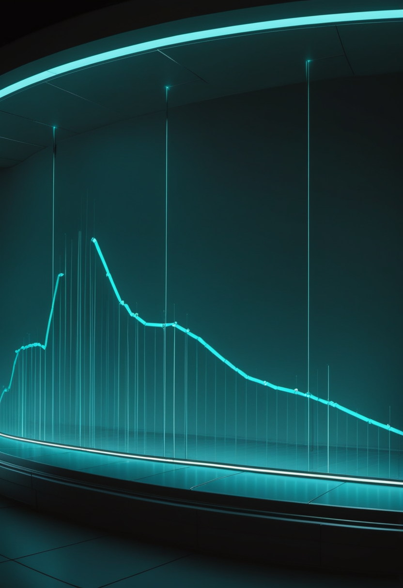
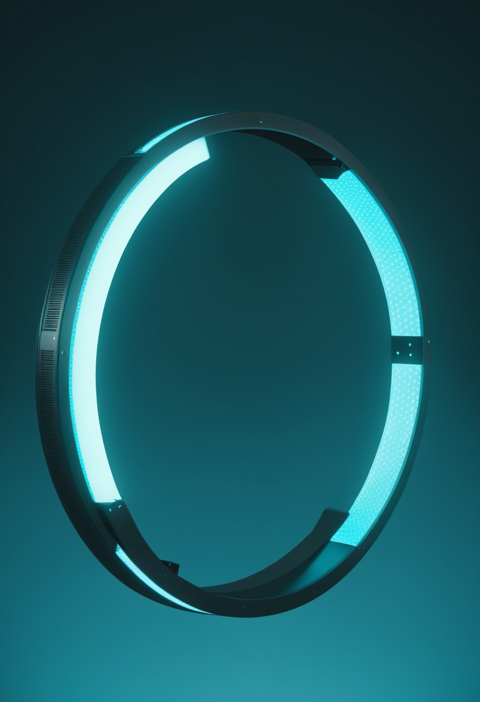
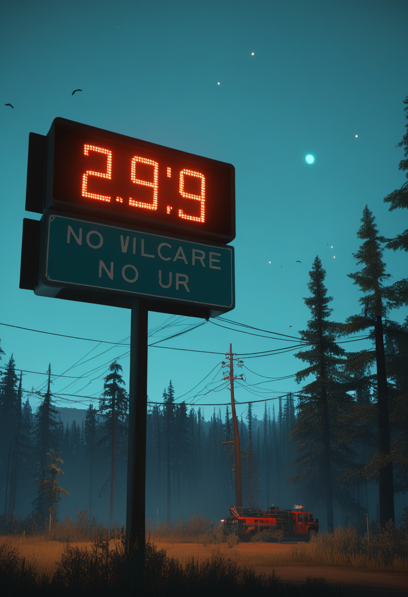
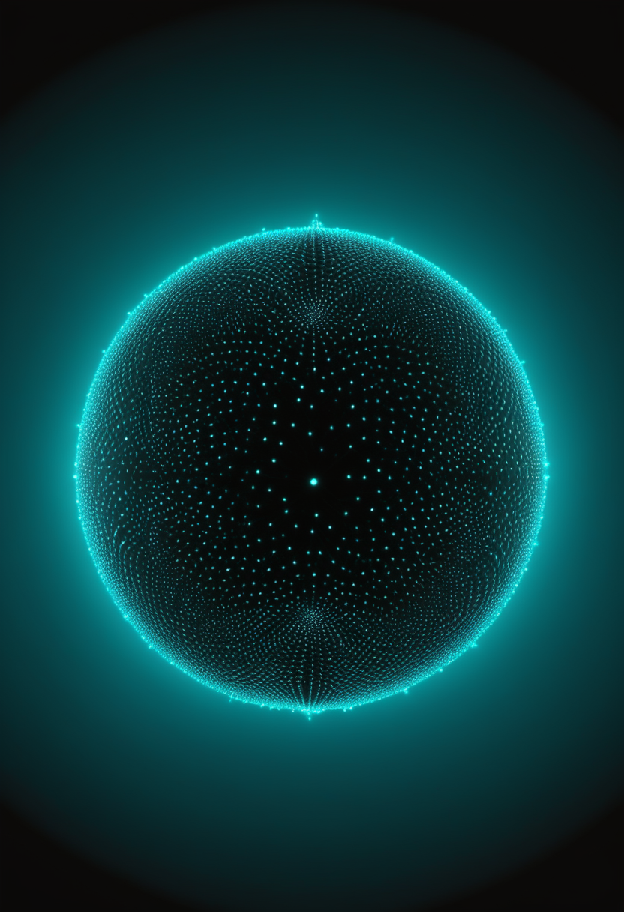

水曜日の便り。DRC(コンゴ民主共和国)のブンディブギョ型エボラは確定3,262例・死者1,437人(7/28時点)に達し、同国史上最大だった2018〜2020年キブ州流行(約3,470例)に迫る規模となった。同じ日、隣国ウガンダは最後の患者退院から42日間のカウントダウンを終え「エボラフリー」への前進を発表し、拡大と終息が国境を挟んで同時進行する対照的な局面を迎えている。米国では麻疹が35年ぶりの最多を更新した。それでも命の現場では、アピテグロマブが第3相試験で統計的に有意な改善を確認しFDA審査(9/30)への追い風とし、Novartisの遺伝子治療Itvismaは欧州で正式承認を取得した。自由の分野では、中国Neuracle社が低侵襲BCIで四肢麻痺患者のロボットグローブ操作を実現し、Neuralinkは量産体制への移行を進める。畏敬の章では、CERNで標準模型を超える物理の兆候が示され、中国は嫦娥7号の打ち上げ準備と天問1号による恒星間彗星の観測を並行して進めている。美の章では、精神疾患の個別診断に道を開く脳デジタルツインと、AI意識の倫理を問う国際シンポジウムが報告された。
7/28号の続報 ― DRC保健省は7/28時点で、ブンディブギョ型エボラの確定例が3,262例、死者1,437人に達したと発表した。DRC史上最大だった2018〜2020年キブ州流行(約3,470例)に迫る「史上最速ペースの流行」との評価が続いており、震源地イトゥリ州が症例の大半を占める。既存治療薬は別種(ザイール型)向けのため対応が難航している。一方、同じ日に隣国ウガンダは確定20例・死者2例にとどめ、7/16の最後の患者退院から42日間のカウントダウンを完了、「エボラフリー」の見解を示した。DRCとの国境地帯の警戒は続くが、拡大が続く震源地と終息へ向かう隣国という対照的な局面が同時に進んでいる。
Scholar Rock社のミオスタチン阻害抗体アピテグロマブは3月末にBLAを再申請し、FDAのPDUFA(審査期限)は2026年9月30日に設定されている。第3相SAPPHIRE試験では非歩行SMA患者のHFMSEスコアで統計的に有意な改善(p=0.019)を確認済みで、承認されれば筋標的型として初のSMA治療薬となる。

Novartis社の遺伝子治療薬Itvisma(オナセムノゲン アベパルボベク)が7月2日、欧州委員会により2歳以上・SMN1遺伝子二対立遺伝子変異を持つ5q型SMA患者向けに承認された。EUで幅広いSMA集団向けに承認された遺伝子補充療法としては初で、米国では2025年11月にFDA承認済み。
筋標的薬アピテグロマブは試験データでFDA審査への追い風を得て、遺伝子治療Itvismaは欧州で正式承認に到達 ― 作用機序の異なる2剤が同時に前進している。
中国のNeuracle社が8電極の脳表面設置型デバイス「NEO」を、10年前の脊髄損傷で手を動かせなくなった男性に移植した。ロボットグローブを思考で操作可能になり、脳内に1,000本超の電極を刺入するNeuralinkと対照的な、低侵襲アプローチとして注目される。
Musk氏は2026年中にNeuralinkが高volume生産体制と自動化された外科手術への移行を進めると表明した。6月にはシリーズEで6.5億ドルを追加調達しており、患者アクセス拡大に向けた製造基盤の強化を加速している。
米中でBCIの実用化競争が加速。8電極の低侵襲アプローチと1,000電極超の量産路線が対照的に併存し、それぞれ異なる角度から実用化に近づいている。
DRC保健省は7/28時点で、ブンディブギョ型エボラの確定例が3,262例、死者1,437人に達したと発表した。DRC史上最大だった2018〜2020年キブ州流行(約3,470例)に迫る「史上最速ペースの流行」との評価が続く。震源地イトゥリ州が症例の大半を占め、既存治療薬は別種(ザイール型)向けのため対応が難航している。

ウガンダの確定症例は20例・死者2例にとどまり、7/16に最後の患者を退院させてから42日間のカウントダウンを完了した。DRCとの国境地帯の警戒は継続するが、「エボラフリー」の見解が7/28に示された。
DRCのエボラは同国史上最大規模に迫る勢いで拡大が続く一方、隣国ウガンダは42日間のカウントダウンを完了し終息を宣言 ― 国境を挟んで正反対の局面が同時進行している。

LHCb実験による「ペンギン崩壊」(B中間子→K中間子+π中間子+2ミューオン)の解析で、標準模型の予測からの逸脱を示す証拠を確認した。有意度は発見水準の5σには届かないが、未知の粒子「レプトクォーク」の存在を示唆する結果として注目される。ATLAS実験は新複合粒子Bc*+中間子を8σ超で初観測(5月発表)しており、LHCでの新発見ハドロン数は84種に達した。
月南極探査機「嫦娥7号」は文昌航天発射場で最終準備中で、8月にも打ち上げ、シャクルトンクレーター縁への着陸と水氷探査を目指す。火星周回機「天問1号」が2025年9月末に撮影した恒星間彗星3I/ATLASの近接画像が7月に発表され、中国初の深宇宙観測として国際的に注目された。
素粒子物理では標準模型の外縁に兆候が現れ、深宇宙では中国が月探査と恒星間天体観測を並行して進める ― スケールの異なる二つの前線が同時に動いている。
個人の神経解剖学的特徴とタスク時の脳活動を統合した「介入可能な脳デジタルツイン」が2026年に発表された。精神疾患に共通する皮質・皮質下ネットワークの個別化された表現型を捉えることに成功し、競合的相互作用を含むモデルが協調型モデルより注意・記憶回路を精度高く再現した。
7月1〜2日、英サセックス大学でAISB Convention 2026が開催され、AI意識研究が生み出しうる「道徳的地位を持つシステム」の倫理的課題を議論した。Bengio氏を含む19人の意識研究者による論文がTrends in Cognitive Sciences誌に掲載され、AI意識を検出・定義する枠組み整備の必要性が訴えられた。
脳を映し取るデジタルツインが臨床応用に近づく一方、AI意識の倫理をめぐる議論は技術の実現性の先を行く形で加速している。
2026年7月29日、DRCのエボラは同国史上最大規模に迫る勢いで拡大を続け、同じ日に隣国ウガンダは42日間のカウントダウンを完了し「エボラフリー」への前進を発表した。国境を挟んで正反対の局面が同時に進む中、命の現場ではアピテグロマブが試験データでFDA審査への追い風を得て、Novartisの遺伝子治療Itvismaは欧州で正式承認に到達した。自由の分野では、低侵襲と量産という異なる路線でBCIの実用化が同時に進み、畏敬の宇宙では素粒子物理の兆候と中国の深宇宙観測が並行して前進した。そして美の章では、脳を映し取るデジタルツインが臨床応用に近づく一方、AI意識の倫理をめぐる議論が技術の先を行く形で加速している。
では、また明日の朝に。 — JaH